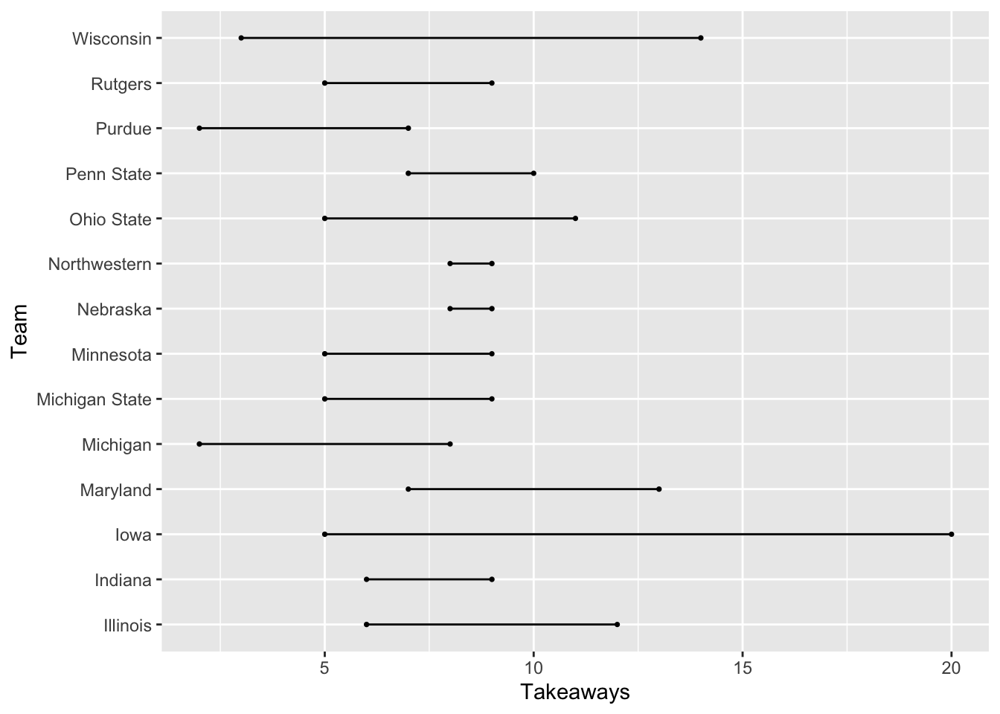
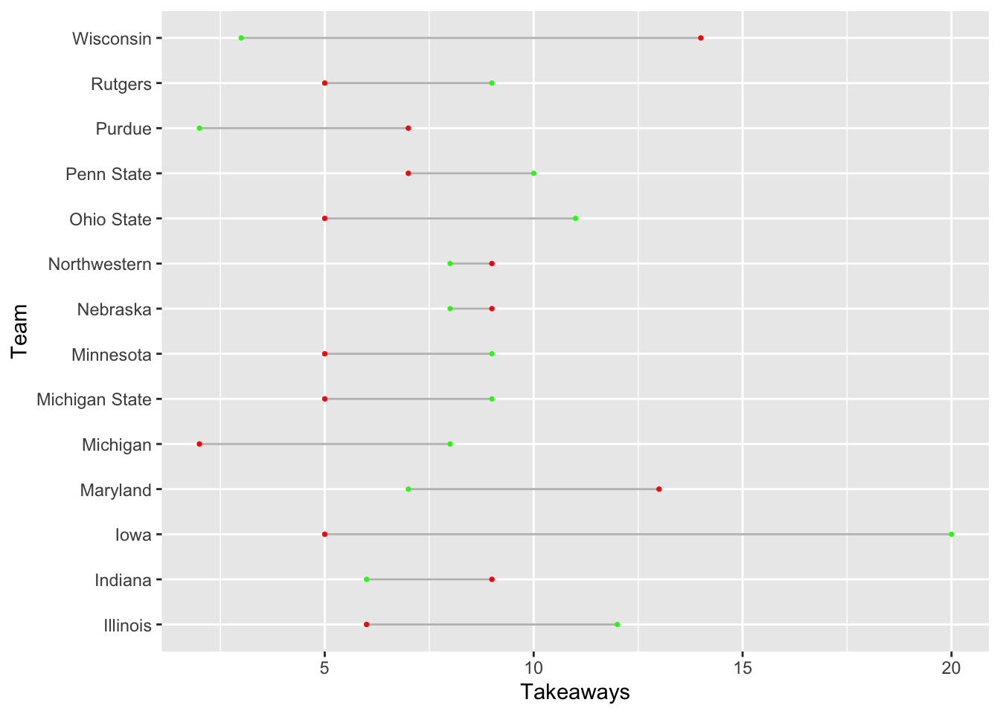
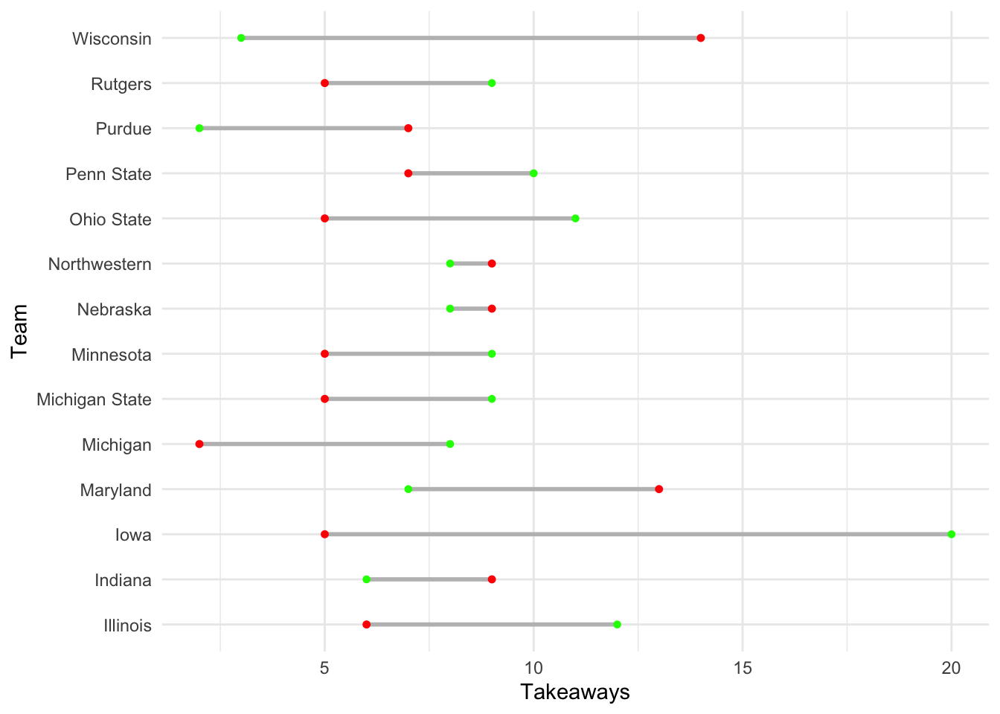
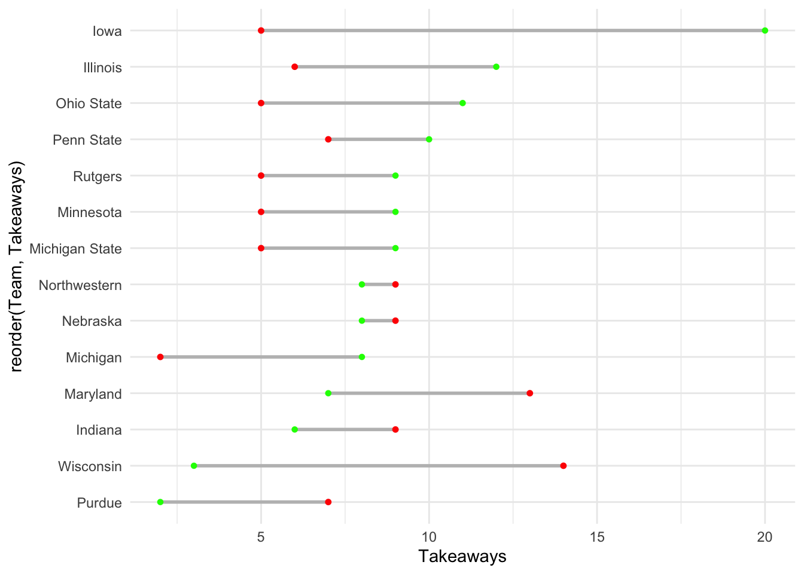
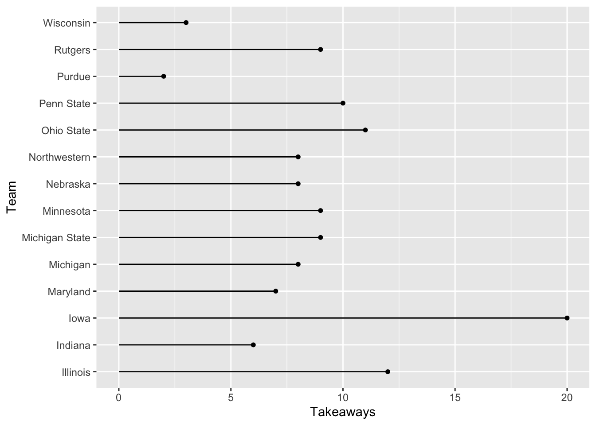
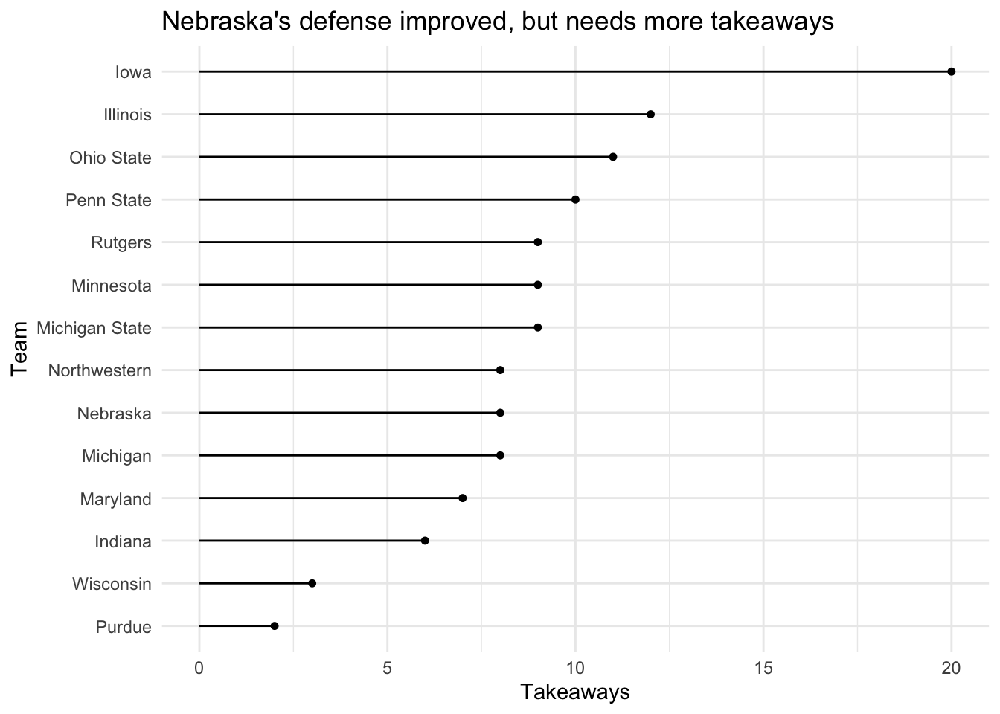
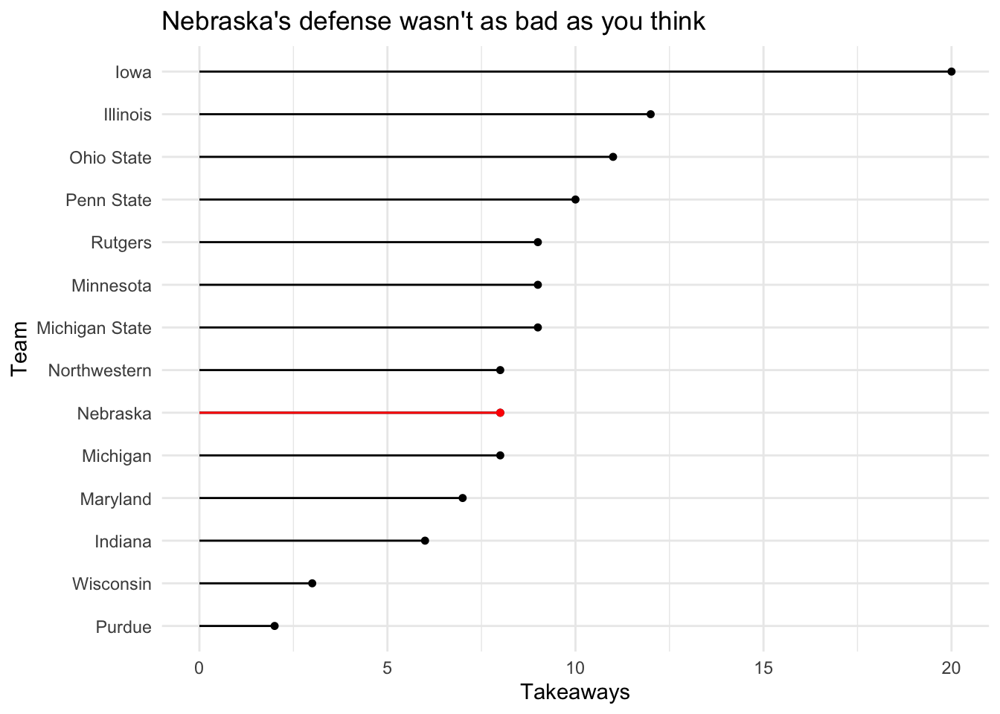

library(tidyverse)
library(ggalt)21 Dumbbell and lollipop charts
Second to my love of waffle charts because I’m always hungry, dumbbell charts are an excellently named way of showing the difference between two things on a number line – a start and a finish, for instance. Or the difference between two related things. Say, turnovers and assists.
Lollipop charts – another excellent name – are a variation on bar charts. They do a good job of showing magnitude and difference between things.
To use both of them, you need to add a new library:
install.packages("ggalt")
Let’s give it a whirl.
21.1 Dumbbell plots
For this, let’s use college football game logs from this season so far.
For this walkthrough:
And load it.
logs <- read_csv("data/footballlogs21.csv")Rows: 740 Columns: 54
── Column specification ────────────────────────────────────────────────────────
Delimiter: ","
chr (8): HomeAway, Opponent, Result, TeamFull, TeamURL, Outcome, Team, Con...
dbl (45): Game, PassingCmp, PassingAtt, PassingPct, PassingYds, PassingTD, ...
date (1): Date
ℹ Use `spec()` to retrieve the full column specification for this data.
ℹ Specify the column types or set `show_col_types = FALSE` to quiet this message.For the first example, let’s look at the difference between a team’s giveaways – turnovers lost – versus takeaways, turnovers gained. To get this, we’re going to add up all offensive turnovers and defensive turnovers for a team in a season and take a look at where they come out. To make this readable, I’m going to focus on the Big Ten.
turnovers <- logs |>
group_by(Team, Conference) |>
summarise(
Giveaways = sum(TotalTurnovers),
Takeaways = sum(DefTotalTurnovers)) |>
filter(Conference == "Big Ten Conference")`summarise()` has grouped output by 'Team'. You can override using the
`.groups` argument.Now, the way that the geom_dumbbell works is pretty simple when viewed through what we’ve done before. There’s just some tweaks.
First: We start with the y axis. The reason is we want our dumbbells going left and right, so the label is going to be on the y axis.
Second: Our x is actually two things: x and xend. What you put in there will decide where on the line the dot appears.
ggplot() +
geom_dumbbell(
data=turnovers,
aes(y=Team, x=Takeaways, xend=Giveaways)
)Warning: Using the `size` aesthetic with geom_segment was deprecated in ggplot2 3.4.0.
ℹ Please use the `linewidth` aesthetic instead.
Well, that’s a chart alright, but what dot is the giveaways and what are the takeaways? To fix this, we’ll add colors.
So our choice of colors here is important. We want giveaways to be seen as bad and takeaways to be seen as good. So lets try red for giveaways and green for takeaways. To make this work, we’ll need to do three things: first, use the English spelling of color, so colour. The, uh, colour is the bar between the dots, the x_colour is the color of the x value dot and the xend_colour is the color of the xend dot. So in our setup, takeaways are x, they’re good, so they’re green.
ggplot() +
geom_dumbbell(
data=turnovers,
aes(y=Team, x=Takeaways, xend=Giveaways),
colour = "grey",
colour_x = "green",
colour_xend = "red")
Better. Let’s make two more tweaks. First, let’s make the whole thing bigger with a size element. And let’s add theme_minimal to clean out some cruft.
ggplot() +
geom_dumbbell(
data=turnovers,
aes(y=Team, x=Takeaways, xend=Giveaways),
size = 1,
color = "grey",
colour_x = "green",
colour_xend = "red") +
theme_minimal()
And now we have a chart that tells a story – got green on the right? That’s good. A long distance between green and red? Better. But what if we sort it by good turnovers?
ggplot() +
geom_dumbbell(
data=turnovers,
aes(y=reorder(Team, Takeaways), x=Takeaways, xend=Giveaways),
size = 1,
color = "grey",
colour_x = "green",
colour_xend = "red") +
theme_minimal()
Believe it or not, Iowa had the most takeaways in the Big Ten this season.
21.2 Lollipop charts
Sticking with takeaways, lollipops are similar to bar charts in that they show magnitude. And like dumbbells, they are similar in that we start with a y – the traditional lollipop chart is on its side – and we only need one x. The only additional thing we need to add is that we need to tell it that it is a horizontal chart.
ggplot() +
geom_lollipop(
data=turnovers,
aes(y=Team, x=Takeaways),
horizontal = TRUE
)
We can do better than this with a simple theme_minimal and some better labels.
ggplot() +
geom_lollipop(
data=turnovers,
aes(y=reorder(Team, Takeaways), x=Takeaways),
horizontal = TRUE
) + theme_minimal() +
labs(title = "Nebraska's defense improved, but needs more takeaways", y="Team")
How about some layering?
nu <- turnovers |> filter(Team == "Nebraska")ggplot() +
geom_lollipop(
data=turnovers,
aes(y=reorder(Team, Takeaways), x=Takeaways),
horizontal = TRUE
) +
geom_lollipop(
data=nu,
aes(y=Team, x=Takeaways),
horizontal = TRUE,
color = "red"
) +
theme_minimal() +
labs(title = "Nebraska's defense wasn't as bad as you think", y="Team")
The headline says it all.